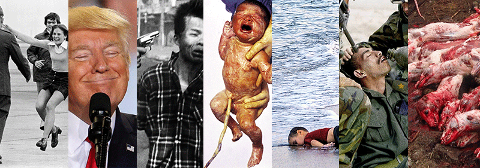
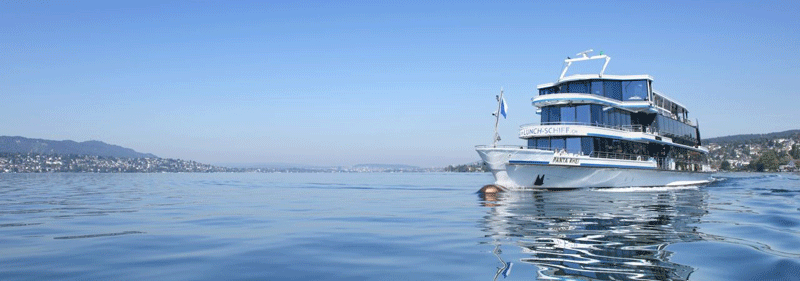
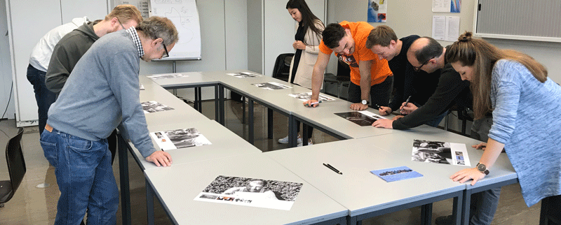

# Intro
Wir befinden uns im Studiengang Interaction Design HF 2017 – 2020 an der Schule für Gestaltung Zürich. Im Modul Experimentelles Erzählen (Basil Vogt) erarbeiteten wir in Gruppen experimentelle Erzählungen, welche wir der Klasse präsentierten.
# Aufgabenstellung
In der Klasse wurden wir gefragt, welche Art von experimentellem Erzählen wir persönlich gerne ausprobieren würden. Ich notierte die Begriffe «Mimik, Musik, Filmmusik, zwei Seiten pro Story». Nachdem wir all diese Begriffe aufgehängt und erläutert hatten, tauschten wir unsere Ideen aus und bildeten Gruppen. Meine erste Idee, Bilder aufzunehmen und mit verschiedenen Audios zu hinterlegen fand bei mehreren Mitschülern anklang.
Die Gruppe war zu gross und so kam es, dass ich mich von meiner ersten Idee löste und mich Matthias und Lars anschloss, welche folgende Idee hatten: Sie wollten Personen Bilder zeigen (z.B. Kriegsbilder), welche Emotionen/Mimiken in den Personen auslösten und diese fotografisch festhalten. Da mein zweiter Gedanke die Mimik war, schloss ich mich den beiden an. Nach erstem Gedankenaustausch kam mir die Idee, die sieben Grundemotionen als Basis zu verwenden. Wir würden also zu allen sieben Grundemotionen Fotos suchen, diese ausdrucken und fremden Personen zeigen. Das Experiment daran ist, ob die Personen wie gewünscht die dazugehörigen Emotionen zeigen, etwas andres fühlen, oder am Ende sogar nichts?
So machten wir uns an die Bildersuche und druckten für unser Vorhaben jeweils zwei Bilder pro Emotion aus.
Freude – Wut – Angst – Ekel – Trauer – Überraschung – Verachtung
# Plan A
Lars druckte die Emotionsbilder auf A5-Karten aus und brachte sie mit. Neugierig, ob wir unser Experiment auf der kleinen Zürichseerundfahrt durchführen könnten, machten wir uns auf den Weg. Als wir am Bürkliplatz auf das Schiff warteten, wandelte sich unsere Neugier in Skepsis. Unsere Klasse war an diesen regnerischen Tag neben ein paar chinesischen Touristen und einer handvoll Rentner die einzigen Passagiere.
Wir schielten vermehrt auf den Flohmarkt auf der anderen Strassenseite, welcher wöchentlich statt fand. Dort hätte es genug Personen, welche wir für unser Experiment anfragen könnten. Wir fragten Basil ob wir nicht hierbleiben könnten - was er jedoch verneinte. So gingen wir auf das Schiff und besprachen unser Vorgehen. Wie erwartet hatte es sehr wenig Passagiere.
Hier ein Auszug unserer Emotionsbilder:
# Plan B
Sinnlos rumsitzen konnten wir uns nicht erlauben, zumal in der Absicht des Experimentes stand, dass der Plan auch geändert werden kann. Wir kamen auf die Idee eine Zeitraffer-Story zu machen. Matthias fotografierte in 2-Sekunden-Abständen seine Sichtweise. Es entstand eine gute Fotostory, aber was hatte das nun mit experimentellem Erzählen zu tun? Könnten wir Plan A und Plan B kombinieren? Wenn ja wie? Wir waren etwas ratlos....
# Plan A – die Zweite
Wir wollten unseren ersten Plan definitiv noch umsetzen. So gingen wir mit Fotos, Kamera und Aufnahmegerät bewaffnet die Woche darauf auf den Flohmarkt beim Bürkliplatz. Ein sonniger, freundlicher Tag! Unsere Chancen standen gut. Wir wussten noch nicht so genau, wie wir die fremden Personen ansprechen sollten. Was sollen wir sagen? Müssen wir alles erklären? Am besten versuchen wir es einfach.
# Schnappschüsse

# Auswertung
Im Unterricht sassen wir mit Basil zusammen und besprachen unser Experiment. Es ist sehr gut gelaufen, wir haben alles zusammen was wir benötigen. Wir haben noch ein paar Fragen betreffend der Dokumentation und der Präsentation. Wir machten uns Gedanken, wie wir unsere eingefangenen Emotionen präsentieren wollen. Die Grundidee war, dass unsere Mitschüler erraten müssen, welche Emotion die Personen zeigen.
Wir wussten nicht, ob wir die Bilder parallel zeigen oder nacheinander, wird der Text auch gleich mit gezeigt oder spielen wir den Text ab? Sollen alle Bilder einzeln aufgelöst werden oder nicht? Eher nicht, da es zu viel Zeit in Anspruch nimmt und wir keinen Vortrag machen wollen.
Die Idee ein Memory zu machen, verwarfen wir nach kurzem wieder. Eine Ausstellung würde die Bilder mehr zur Geltung bringen. Der Gedanke gefiel uns. Nun war noch die Frage, ob wir die Bilder auslegen, an der Wand aufhängen oder frei aufhängen würden? Bei letzterer Variante könnten wir das jeweilige "Emotionenbild" plus dessen Aussage auf der Rückseite platzieren und die Mitschüler würden selbständig die Antworten anschauen können. Das mit dem Aufhängen war etwas komplizierter, so einigten wir uns auf das Auslegen der Bilder.
Bei unserem Experimentellen Erzählen kümmert sich Matthias um das Intro, Lars übernahm das Layout und Steffi die Dokumentation.
# Ausstellung
In einer ersten Runde stellten wir einige der am Bürkliplatz gemachten Fotos, mit jeweils drei möglichen Emotionsbildern kombiniert aus. Unsere Mitschüler sollten sich die Mimiken der fotografierten Personen anschauen und einen Tipp abgeben, welches der drei möglichen Bilder wir der Person gezeigt haben.
In der zweiten Runde präsentierten wir die Lösungen. Bis auf ein paar Ausnahmen lagen unsere Mitschüler meistens richtig
Hier findest du die ausgestellten Bilder zum Download:

# Fazit
Abschliessend können wir sagen, dass nicht immer alles so ist, wie es scheint. Teilweise konnten wir mit unseren Emotionsbildern die von uns gewünschte Reaktion in den Gesichtern der Fotografierten wiedererkennen.
Es gab aber auch Personen, die komplett gegenteilig reagierten, wie wir es erwartet hatten. Am eindrücklichsten zeigte sich dies bei einer Dame welche lächelte, als sie das Bild eines toten Flüchtingskindes betrachtete.
Bei der Ausstellung konnten unsere Mitschüler die Mimiken den Emotionen grössten Teils zuordnen.
# Dokumentation
Hier findest du die Dokumentation zu unserem Wahrmehmungsexperiment Sense – Modul experimentelles Erzählen / Basil Vogt – zum Download: